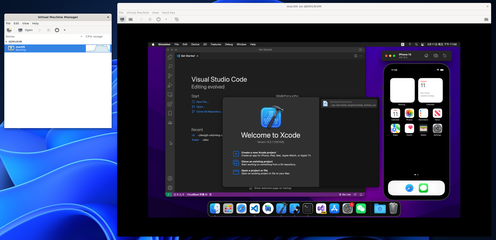
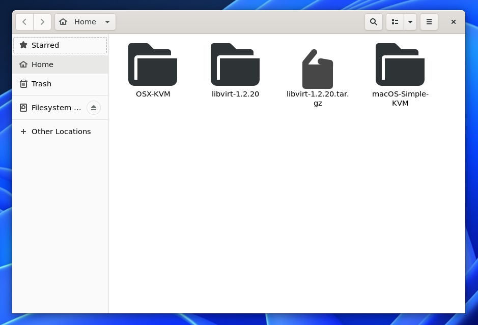
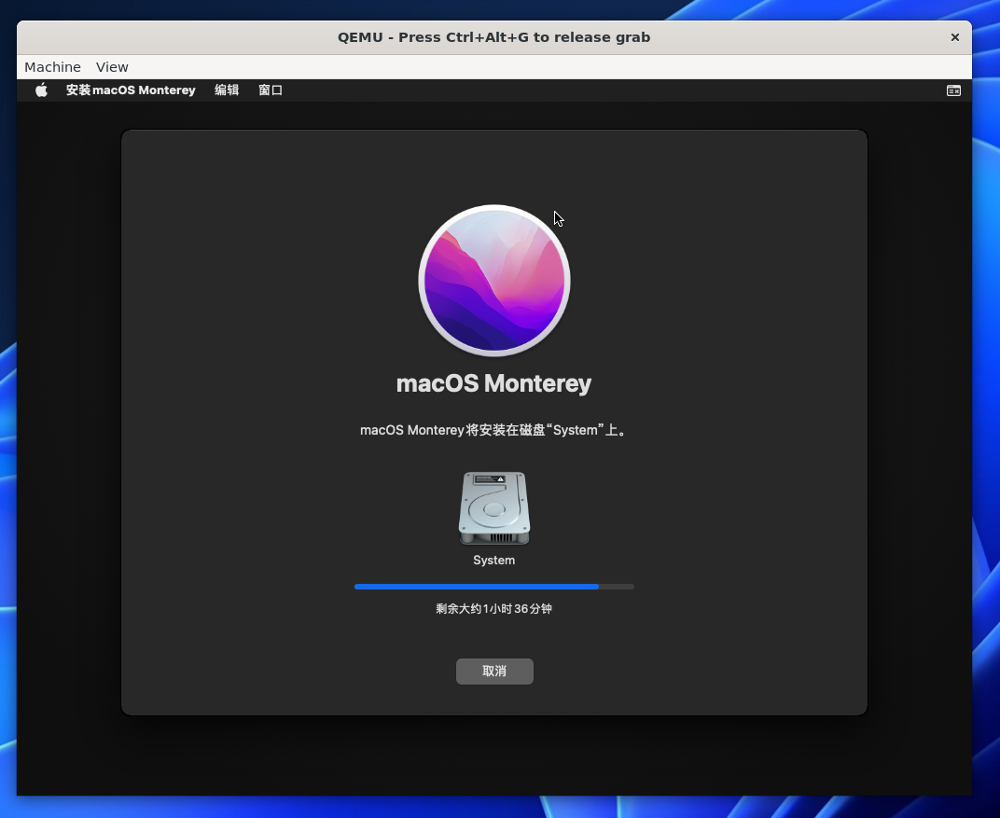
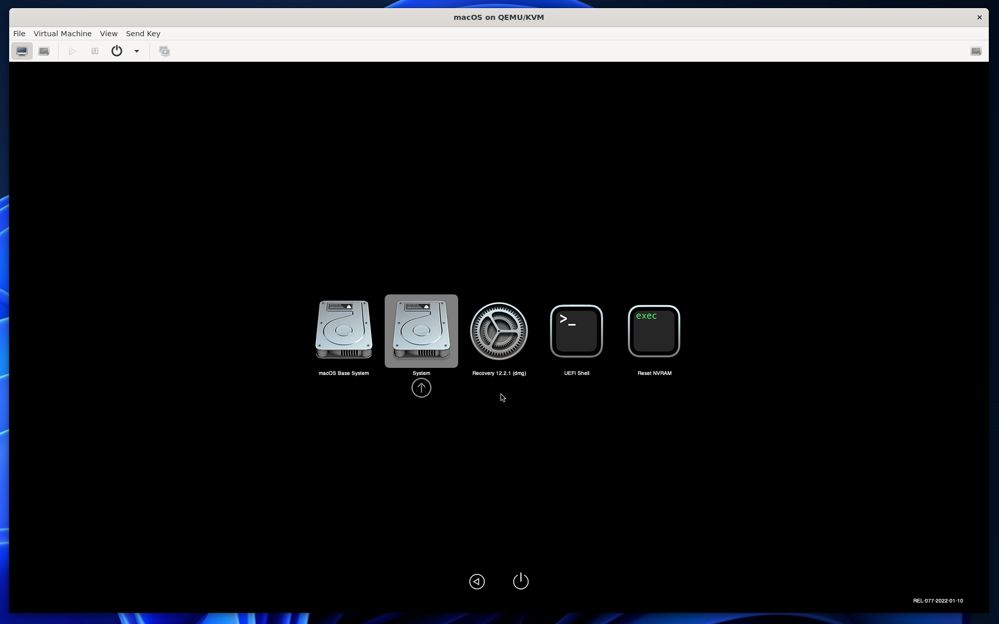
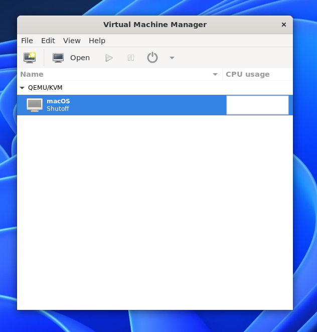
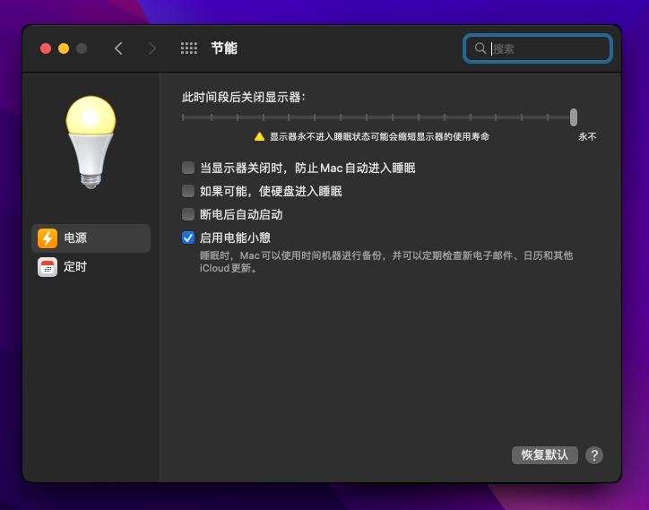
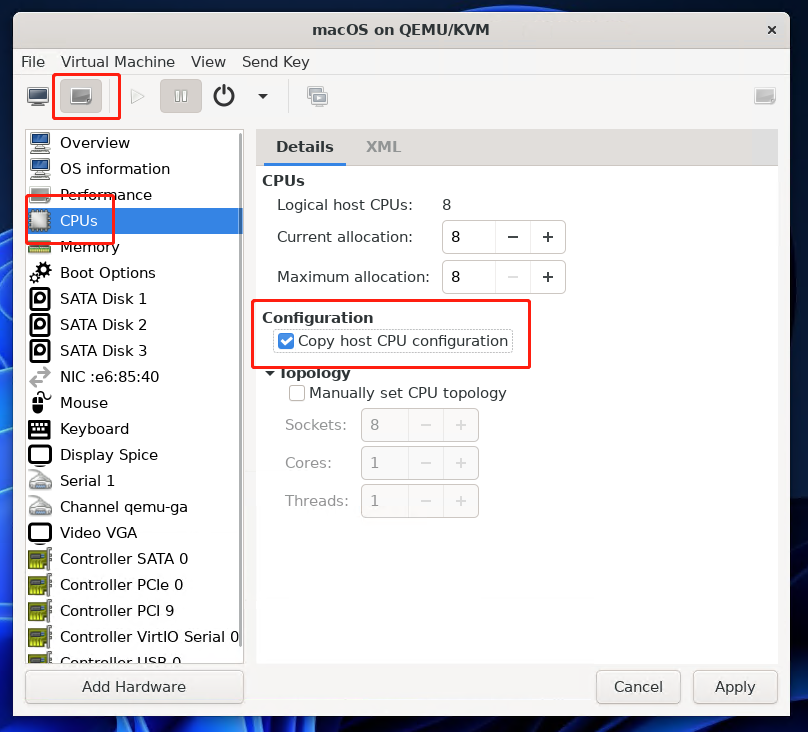
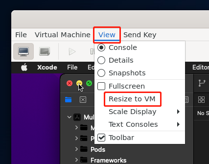

在 Windows 上流畅使用 MacOS 虚拟机
本教程使用 WSL2 + KVM 运行 MacOS 虚拟机，MacOS 运行在 Linux 虚拟机中的 KVM 虚拟机，即嵌套虚拟化，但由于 Windows 对 WSL2 优化很好，个人感觉此方案比其他方案更好。
步骤较多，操作较繁琐，但成果很值得。

在 Windows 宿主机中成果截图
前提条件
- Windows 10/11 22000+
- 开启 WSL2，详见 https://docs.microsoft.com/zh-cn/windows/wsl/install
文中所出现的 WSL，如果没有特指，都是 WSL2。
与其他方案相比
VMware/VitualBox
优点
- 上手简单，安装快捷，“懒人版”更是无脑式安装
- VMware 搭配
VMware Tools更是可以与宿主机互相复制文件，也能自适应窗口尺寸
缺点
- 运行不如此方案流畅
- 启动速度慢，固态硬盘启动时间可能也要几分钟
- 与 Hyper-V 兼容有问题，在开启 Hyper-V 的情况下，由于宿主机也是运行在 Hyper-V 的虚拟机，而 VMware/VitualBox 不支持嵌套虚拟化，不能虚拟化 CPU 的 MacOS 虚拟机能卡出翔。
Docker-OSX
Docker 中运行 MacOS 较成熟的项目是 https://github.com/sickcodes/Docker-OSX
优点
上手简单，安装快捷，一行命令就可以启动一个运行 MacOS 的容器
缺点
Docker 中的 MacOS 也是运行在 Linux 中的 KVM
- Docker 容器没有 WSL 启动便捷
- 没有 WSL 优化的好，因此流畅度不如此方案
WSL2 开启 GUI
此部分参考 https://docs.microsoft.com/zh-cn/windows/wsl/tutorials/gui-apps
此部分用于在 Windows 中以窗口形式操作 MacOS 虚拟机
完成后你也可以运行其他 Linux GUI 应用程序，你可以像本地应用一样运行 WSL Linux 中的应用程序，也可以将应用添加到开始菜单、固定到任务栏等
安装后可以得到无缝的 Linux + Windows 桌面体验
安装 vGPU 驱动
安装 vGPU 驱动后可以使用虚拟 GPU，可以使用硬件加速 OpenGL 渲染
根据你电脑显卡下载安装：
- Intel GPU 驱动程序
- AMD GPU 驱动程序
- NVIDIA GPU 驱动程序
更新 wsl
1 | wsl --update |
然后重启
1 | wsl --shutdown |
GUI 测试
测试一下 GUI 能否正常使用
Nautilus是 gnome 的文件管理器，这里用来安装测试
1 | sudo apt install nautilus -y |
安装完成后可以直接打开，像 windows 应用一样
1 | nautilus |

在 Windows 宿主机中 Nautilus 运行截图
以后在 windows 的 cmd 中执行 wsl nautilus 即可直接打开
允许 WSL 嵌套虚拟化
默认 WSL 没有支持嵌套虚拟化，需要修改一下配置。
在 Windows 中，用户文件夹下编辑或新建文件 C:\Users\%User%\.wslconfig。（User 是你的 Windows 系统用户名）
内容如下
1 | [wsl2] |
简单说明
此部分参考 https://docs.microsoft.com/zh-cn/windows/wsl/wsl-config
- nestedVirtualization 关键，是否允许嵌套虚拟化
- memory 允许的 WSL 内存
- processors 虚拟 CPU 线程
- swap 要向 WSL 2 VM 添加的交换空间量，0 表示无交换文件。 交换存储是内存需求超过硬件设备限制时使用的基于磁盘的 RAM。
重启 WSL
1 | wsl --shutdown |
开始安装 MacOS
使用 OSX-KVM 安装 MacOS 虚拟机
此部分参考 https://github.com/kholia/OSX-KVM
下载
先安装需要用到的包
1 | sudo apt-get install qemu uml-utilities virt-manager git wget libguestfs-tools p7zip-full make -y |
给 KVM 增加一个开关配置
1 | echo 1 > /sys/module/kvm/parameters/ignore_msrs |
设置权限
1 | sudo usermod -aG kvm $(whoami) |
拉取 OSX-KVM
1 | git clone https://github.com/kholia/OSX-KVM.git |
下载 MacOS 安装镜像
1 | ./fetch-macOS-v2.py |
运行显示
1 | 1. High Sierra (10.13) |
实测 4 和 5 都可以，而且完成后 Big Sur 也能正常升级到 Monterey，其他没试。
下载完成后会有 BaseSystem.dmg 文件，需要转为 img 格式
1 | dmg2img BaseSystem.dmg BaseSystem.img |
创建虚拟磁盘文件
1 | qemu-img create -f qcow2 mac_hdd_ng.img 128G |
其中 mac_hdd_ng.img 是文件名，可以任意修改
执行脚本
先修改 OpenCore-Boot.sh 文件
ALLOCATED_RAM运行内存，建议最低改为 8GCPU_THREADSCPU 线程CPU_CORESCUP 核心数-drive id=MacHDD,if=none,file="$REPO_PATH/mac.img",format=qcow2其中的$REPO_PATH/mac_hdd_ng.img为上一步创建的虚拟磁盘文件
执行脚本
1 | ./OpenCore-Boot.sh |
执行完成后应该会弹出 QEMU 窗口。
如果没有，请确认前面的步骤 WSL2 是否正确开启 GUI，vGPU 驱动是否已正常安装。
再次启动也是运行这个脚本
正在安装
安装流程和其他方式安装大致相同，只用注意一点，安装完成后，再次启动会多出个引导盘，选择多出来的那个。
安装界面
显示要一个多小时，甚至二两多小时，实则不用那么久

正在安装 MacOS
安装完成后启动
选择如图第二个启动项

启动项
还需要安装一会，才能进入系统。
为什么选择 OXS-KVM 而不是 macOS-Simple-KVM
macOS-Simple-KVM 项目地址：https://github.com/foxlet/macOS-Simple-KVM
这个项目好像已经停滞不更新，截至目前已经一年多没更新了。
引导方式是四叶草，最高版本只支持 mojave，连 xcode 都不能用
故放弃
使用 virt-manager 管理
现在虽然你已经能成功使用 MacOS 了，但不方便管理，而且每次启动都需要运行脚本，如果有多个虚拟机就更难管理。
你可以放弃这一步，若放弃这一步：
- 你以后每次启动虚拟机，只能用命令
./OpenCore-Boot.sh - 虚拟机运行期间，命令行窗口不能关闭
- 虚拟机运行期间，QEMU 窗口不能关闭
- 若修改虚拟机配置，需要修改脚本文件，不方便操作
- 不能快捷启动，此部分完成后可以在 Windows 宿主机中运行
wsl virt-manager直接打开管理界面
我们现在开始使用 virt-manager 管理这个虚拟机，提升使用体验。
启用 systemd
如果不是 WSL，Linux 应该都能使用 systemctl 命令，但 WSL 的启动方式决定其不支持 systemctl 命令，因此也无法开启 libvirtd，如果执行 service libvirtd start 会报找不到这个命令的错误，所以 virt-manager 就无法连接到 WSL 中的虚拟机。
但我们可以使用 genie 工具启用 systemctl。
启用 systemctl 的部分参考 https://gist.github.com/djfdyuruiry/6720faa3f9fc59bfdf6284ee1f41f950
此部分是在 WSL Linux 系统中操作
下载脚本
1 | cd /tmp |
修改脚本
这一步是可选操作，为了安装新版 genie
genie Release 列表可以在这里查看 https://github.com/arkane-systems/genie/releases
1 | vim /tmp/install-sg.sh |
目前最新版是，2.2，因此修改 GENIE_VERSION 值为 2.2，如
1 | GENIE_VERSION="2.2" |
执行脚本
1 | chmod +x /tmp/install-sg.sh |
- 如果报错
Errors were encountered while processing: systemd-genie
执行
1 | apt install systemd-genie |
- 如果报错
Unmet dependencies. Try 'apt --fix-broken install' with no packages (or specify a solution). root@PC:/tmp# apt update
执行
1 | apt --fix-broken install |
开启 libvirtd
在 WSL 中执行
1 | genie -c systemctl start libvirtd |
这个命令表示进入 genie 并执行 systemctl start libvirtd 命令，等同于：
1 | genie -s |
正常启动后就可以使用 virt-manager 了，但是我们还没有将刚才创建的虚拟机加入 virt-manager。
如果出现 Waiting for systemd....!，用 Ctrl + C 取消即可
注意：这时你不能使用 vGPU，因为启动方式没有采用 WSL 默认的方式。你需要退出 WSL 并重新用 wsl 命令进入 WSL，才可以继续操作
将虚拟机加入 virt-manager
此部分参考 https://github.com/kholia/OSX-KVM
- 进入前面步骤使用 git 下载的 OSX-KVM 项目目录下，编辑虚拟机配置文件
macOS-libvirt-Catalina.xml，把CHANGEME全部换为 OSX-KVM 所在路径，根据此教程就是你的 wsl 用户名
1 | vim ./macOS-libvirt-Catalina.xml |
- 你也可以用以下脚本快速替换为用户路径：
1 | sed "s/CHANGEME/$USER/g" macOS-libvirt-Catalina.xml > macOS.xml |
- 执行下面命令将虚拟机加入 virt-manager
1 | virsh --connect qemu:///system define macOS.xml |
- 执行
virt-manager以打开virt-manager，你将能看到名称为macOS的虚拟机

在 Windows 宿主机中 virt-manager 截图
现在你可以用 UI 的方式，编辑或启动名为 macOS 的虚拟机了
快捷启动
virt-manager 正确配置后，在 Windows 宿主机中，创建 .bat 脚本文件，内容为
1 | wsl genie -c systemctl start libvirtd |
每次运行这个脚本就可以快速打开 virt-manager 了
遇到的问题
下面是可能会遇到的问题，有已解决的，也有未解决但有替代方案的
virt-manager 检测不到 libvirtd
在 使用 virt-manager 管理 部分有说明
MacOS 一段时间不操作假死
在 MacOS 中，关闭节能
设置位于 系统偏好设置 -> 节能
此时间段后关闭显示器设为永不- 取消勾选
如果可能，使硬盘进入睡眠

Waiting for systemd….!
运行 genie 命令可能出现这个问题，是由于 genie 在等待 systemd 回应
你可以 Control + C 取消并继续操作，也可以永久性的解决这个问题，参考
https://github.com/arkane-systems/genie/wiki/Systemd-units-known-to-be-problematic-under-WSL
和 Windows 宿主机的文件/剪切板传输
可以用其他传输工具和剪切板共享工具
暂时没有直接复制粘贴的方法
虚拟机中无法收到 Win 键的响应
即徽标键，在 MacOS 中是 Command 键，影响如 Command + C, Command + V 等快捷键
可以临时改建，或用 VNC 连接 MacOS 使用
暂未没有更好的方法
反复进入启动项选择界面
可能是 CPU 性能不够，或者线程数给的不够，这种只能增加配置或者换电脑
也可能是 CPU 配置不正确，将 CPU 配置改为和 KVM 宿主机相同，即与 WSL CPU 配置相同，如图

CPU 配置
虚拟机显示大小与窗口大小不匹配
依次点击 KVM 中的菜单 View -> Resize to VM，如图：

虚拟机显示大小与窗口大小不匹配
或勾选 Fullscreen 以全屏